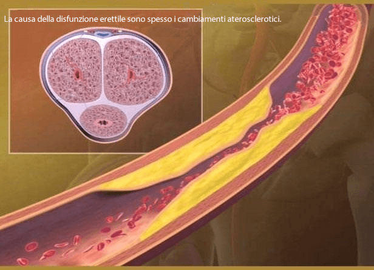
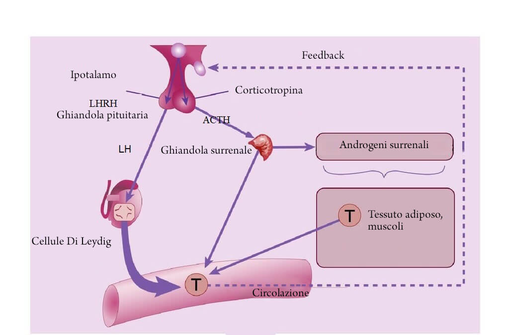

Erezione forte anche dopo i 60 anni: L'Associazione Andrologica Italiana ha iniziato a distribuire tra gli uomini un nuovo rimedio efficace per ripristinare la potenza maschile. Ogni persona ha diritto di ricevere un trattamento a un prezzo scontato speciale.
Gli studi dimostrano che questo prodotto è circa 3-4 volte più efficace del Viagra
Nella primavera del si è svolto un evento straordinario in occasione dell'annuale Congresso europeo di andrologi e sessuologi. Tutto il pubblico si è alzato in piedi e ha applaudito per più di 10 minuti uno scienziato che stava sul palco. Quello scienziato era Carlo Papi, uno dei principali urologi italiani. È stato lui, insieme a un gruppo di scienziati, a sviluppare un rimedio unico in grado di liberare completamente gli uomini dai problemi di potenza. Questo prodotto stimola la produzione di ormoni luteinizzanti e follicolo-stimolanti, che a loro volta influenzano il funzionamento della ghiandola pituitaria.
Carlo Papi, chirurgo-urologo italiano, professore, inventore di un prodotto unico che ripristina la potenza, è morto poco dopo il suo grande successo, nello stesso anno .
La morte improvvisa dello scienziato gli ha impedito di mettere in produzione la sua scoperta. Solo anno dopo i suoi allievi sono riusciti a farlo. Nel , il nuovo prodotto ha superato tutti gli studi clinici necessari, i cui risultati hanno mostrato ancora una volta la sua elevata efficacia: 96 uomini su 100 hanno dichiarato di aver ripristinato completamente la potenza, anche in età avanzata.
A causa del fatto che questo prodotto era realizzato localmente, l'Associazione Italiana di Andrologia ha deciso di inviarlo in farmacia senza costi aggiuntivi e ad un prezzo notevolmente ridotto. Grazie a questo, ogni uomo può ordinare il prodotto ad un PREZZO RIDOTTO.
Il 73% degli uomini soffre di impotenza già all'età di 40 anni.
Negli ultimi 10 anni, i medici sono particolarmente allarmati dal fatto che i problemi di potenza si verificano negli uomini in un'età sempre più giovane. Le ragioni della precoce scomparsa della potenza sessuale sono ben note a tutti: uno stile di vita sedentario, cattive abitudini, alimentazione scorretta, ambiente ecologico, ecc.
Tuttavia, pochissime persone sono veramente consapevoli che tanti problemi nella vita di un uomo possano derivare da disordini nella sfera sessuale.
 Nel caso di una mancata potenza a lungo termine, i vasi sanguigni del pene si ricoprono di placche aterosclerotiche, che a loro volta portano allo sviluppo della completa impotenza.
Le fasi dell'impotenza e le loro conseguenze
Fase 1. La potenza a volte scompare, ad esempio dopo aver bevuto alcolici o senza una ragione apparente. A volte manca semplicemente l'umore giusto per avere un rapporto sessuale. La maggior parte delle persone lo attribuisce al duro lavoro, allo stress e ad altri fattori. Tuttavia, questo è il primo segno che può peggiorare nel tempo.
Fase 2. I problemi di potenza emergono sempre più spesso. Anche se non scompare del tutto, non è affidabile come prima. Il pene può ammorbidirsi durante il rapporto o quando si indossa un preservativo. Di norma, in questa fase, l'uomo inizia a pensare al problema, anche se le sue azioni si limitano al fatto di assumere ogni tanto il Viagra.
Fase 3. La potenza si manifesta raramente. La libido diminuisce. L'uomo diventa irritabile, la sua vitalità e il desiderio di fare qualsiasi cosa scompaiono. Iniziano i problemi familiari: frustrazioni e litigi più frequenti tra i coniugi, l'infedeltà delle donne, il peggioramento nelle relazioni possono portare al divorzio.
Fase 4. Completa impotenza. Il Viagra non aiuta più. Fino al 91% degli uomini in questa condizione diventa single: le donne raramente vivono con gli uomini impotenti e, se lo fanno, si sentono frustrate. Si sviluppa la depressione e altri disturbi fisici e psicologici. Il nostro corpo è progettato in modo tale che la sua funzione principale sia quella di riprodursi. Non appena questa funzione viene persa, il corpo inizia a indebolirsi molto rapidamente.
In assenza di un'erezione per lungo tempo, l'afflusso di sangue agli organi pelvici si indebolisce, il che porta allo sviluppo di molte malattie pericolose.
Storie dagli archivi dell'Istituto di Ricerca Urologica di Milano. Dietro ognuna di queste storie c'è una tragedia personale. È vietato leggere a persone particolarmente sensibili!
- Cancro alla prostata in un uomo di 48 anni. Il cancro alla prostata è la principale causa di morte (fino all'88%) tra gli uomini con impotenza. La sua causa è la mancanza di una corretta circolazione sanguigna negli organi pelvici e l'ecchimosi purulenta all'interno della prostata.
- Cancrena (necrosi) del pene in un uomo di 44 anni, a causa della prolungata mancanza di erezione. È stato necessario un intervento chirurgico immediato, ma l'avvelenamento del sangue non è stato fermato e l'uomo è morto.
- Calcoli renali. Anche i calcoli renali si sviluppano a causa di un peggioramento dell'afflusso di sangue agli organi pelvici. È una malattia molto dolorosa, che spesso richiede un intervento chirurgico immediato per rimuovere i calcoli o, addirittura, tutto il rene.
Siccome la potenza può scomparire completamente, molti uomini cercano di sbarazzarsi di questi tipi di problemi di erezione non appena iniziano a manifestarsi. Tuttavia, fino a poco tempo fa era impossibile ripristinare completamente la potenza: i farmaci disponibili sul mercato (ad esempio il Viagra) sono in grado di migliorare l'erezione SOLO PER UN BREVE PERIODO DI TEMPO.
Un rimedio unico sviluppato dagli scienziati italiani sotto la guida del dott. Papi aiuta a RIPRISTINARE COMPLETAMENTE LA POTENZA MASCHILE NATURALE, cioè far sì che l'erezione si manifesti spontaneamente (come negli uomini sani), senza assumere stimolanti.
Abbiamo chiesto a Maurizio Piccolo, dottore in scienze mediche, professore e capo del dipartimento di urologia, di parlarci di questo nuovo prodotto che si chiama .
"E' stato un prodotto estremamente difficile da sviluppare, ma molto importante per il futuro degli uomini. Alla fine, è stato sviluppato con successo presso l'Istituto di ricerca urologica di Milano."
Maurizio Piccolo parla delle cause che portano a sviluppare i disturbi della potenza e dei possibili modi per poterla ripristinare.
- Dott. Piccolo, potrebbe spiegarci in maniera semplice, perché la potenza maschile si indebolisce e come si può fermare questo processo?
- La natura ci ha creato in modo tale che il compito principale di ogni individuo è quello di generare e dare alla luce una prole. I nostri corpi sono progettati per funzionare bene, senza intoppi. Possiamo dire che ci sono tre periodi nella vita di ogni uomo: quando si sviluppa e matura, quando è in grado di riprodursi e quando le sue forze iniziano a indebolirsi. Il periodo in cui si trova il corpo di un uomo in un determinato momento può essere verificato sulla base del livello di testosterone nel sangue. Il testosterone è al massimo livello durante il periodo in cui il corpo è capace a riprodursi, quindi è superiore a 11 nmol/l. Con l'avanzare dell'età (dopo i 45 anni), la sua quantità diminuisce: l'uomo passa al terzo periodo. In condizioni normali, la diminuzione del testosterone è fisiologica, perché è un processo completamente naturale.
Tuttavia, lo stile di vita moderno - vale a dire il fatto che gli uomini oggi sono poco attivi fisicamente - fa sì che i livelli di testosterone inizino a ridursi in modo anomalo molto di più di quanto dovrebbero. Dopo i 30 anni, nel 93% degli uomini che abbiamo intervistato il livello di testosterone è in media di 5 nmol/l, che è 2 volte inferiore alla norma! Naturalmente, questo porta a problemi di potenza e, inevitabilmente, a malattie premature causate dalla mancanza di un normale afflusso di sangue agli organi pelvici.
- In che modo può aiutare gli uomini?
- È importante capire che non è un prodotto stimolante. Il suo scopo è fare un'altra cosa: attivare la produzione di testosterone da parte del corpo. Il prodotto non provoca una vasodilatazione anormale pericolosa per il sistema circolatorio nella zona pelvica, che accade, invece, dopo l'assunzione del Viagra e altre sostanze chimiche.
I principi attivi contenuti in contribuiscono alla produzione attiva degli ormoni luteinizzanti e follicolo-stimolanti, che a loro volta influenzano il funzionamento della ghiandola pituitaria. A sua volta, la ghiandola pituitaria aumenta la produzione dell'ormone testosterone.
è una soluzione a tutti i problemi di potenza in una volta:
- Usando le capsule, un uomo restituisce gradualmente un'erezione regolare, si libera del dolore, risolve il problema dell'eiaculazione precoce e ripristina il naturale funzionamento del sistema genito-urinario. Questa è un'eccellente prevenzione dell'impotenza. Le capsule agiscono dall'interno, migliorando il benessere di un uomo e ripristinando la forza maschile.
- Il gel è un prodotto aggiuntivo per il trattamento dell'impotenza. E' una stimolazione aggiuntiva del pene. Il prodotto non solo agisce gradualmente sul problema, ma è anche un lubrificante germicida per i rapporti sessuali. Il gel aumenta il flusso sanguigno al pene e fornisce un'erezione stabile e sensazioni più intense, ritardando l'eiaculazione.
Pertanto, ha molteplici effetti sul corpo. Non voglio entrare nel dettaglio delle reazioni chimiche nel corpo, perché solo poche persone potrebbero capirle bene. Voglio solo notare che migliora contemporaneamente l'erezione subito dopo l'assunzione della capsule e riattiva il corretto funzionamento della ghiandola pituitaria, ripristinando così la potenza naturale che dopo aver completato il trattamento si verifica da sola, senza l'uso dei prodotti stimolanti. Anche negli uomini di età superiore ai 50-60 anni. Grazie a è possibile avere l'erezione anche in età avanzata.
Anche il testosterone di per sé è estremamente benefico per gli uomini, perché è proprio la sua mancanza che porta all'invecchiamento del corpo e allo sviluppo di varie malattie. Nei paesi più sviluppati, il testosterone viene prescritto di routine a tutti gli uomini dopo i 50 anni.
 Per avviare il processo di produzione di testosterone da parte delle cellule di Leydig, la ghiandola pituitaria invia un "segnale" alla produzione. Ed è proprio questo processo viene stimolato grazie all'assunzione del nuovo prodotto .
- Normalizzare la produzione di testosterone è una soluzione semplice, giusto? Come mai nessuno ci ha pensato prima?
La soluzione può sembrare semplice. Tuttavia, lavorare su questo processo non è così facile. Una sostanza che può influenzare indirettamente la ghiandola pituitaria è stata scoperta dal dott. Carlo Papi. In tutto questo tempo, abbiamo lavorato allo sviluppo di un prodotto basato sulla sua scoperta. Oggi, è l'unico prodotto veramente efficace nella lotta contro l'impotenza sessuale maschile. Il Viagra non può essere paragonato a questo prodotto. È importante anche il fatto che non abbia effetti collaterali. Nemmeno uno. Questo lo rende imparagonabile ad altri prodotti, in particolare a quelli contenenti sildenafil.
- è stato testato clinicamente? Cosa ha mostrato la ricerca?
- Gli studi clinici sono stati condotti più di una volta. E ogni volta i risultati delle ricerche sono stati sorprendenti.
Vi presenterò i risultati degli ultimi studi clinici condotti nell'autunno presso il Centro Nazionale per la Ricerca Urologica. In questo studio hanno partecipato circa 200 uomini con problemi di potenza di vario livello.
- È vero che con l'attuale programma promozionale chiunque può ordinare a un prezzo ridotto?
- Si è così. Attualmente, l'Istituto di ricerca urologica e l'Associazione italiana di andrologia stanno distribuendo a prezzo ridotto nell'ambito del programma statale "Salute maschile".
A mio avviso, questa è un'iniziativa molto importante e utile, perché i problemi di potenza compaiono sempre più spesso negli uomini e spesso portano alla rottura della famiglia e alla perdita della salute maschile. Penso che questo prodotto possa salvare molte famiglie e ridurre il numero degli uomini che assumono stimolanti come il Viagra, danneggiando la propria salute.
- Come è possibile ottenere il prodotto al prezzo ridotto? Cosa bisogna fare?
- 1. Bisogna vivere in Italia.
- 2. Dovete partecipare a una lotteria per ottenere uno sconto sul prodotto.
- 3. Dovete ritirare il prodotto dal corriere dopo 5-7 giorni (tempi di consegna).
ATTENZIONE! ULTIMO GIORNO PER INVIARE LA RICHIESTA DI è . Dopo il prodotto potrà essere acquistato a un prezzo di mercato!
Se volete provare il nuovo prodotto per il ripristino della potenza maschile, finché la promozione è ancora in corso, affrettatevi a partecipare al programma promozionale!
Commenti
Raffaele
Grazie. Potrebbe essere veramente utile questo prodotto. I problemi di potenza iniziano a darmi fastidio sempre di più. Ho già ordinato. Spero che mi aiuti.
Vincenzo
Ho già ordinato e ho iniziato a prenderlo. Funziona davvero bene. L'erezione appare letteralmente 10 minuti dopo l'assunzione della capsula e l'applicazione del gel. Ottimo! Ma quello che mi piace di più è che l'effetto è cumulativo. Ciò significa che più tempo lo assumi, più duraturo sarà poi il risultato. L'erezione mattutina ha già iniziato ad apparire. Non l'avevo da molto tempo. Vi consiglio vivamente di provarlo. Soprattutto a prezzo scontato.
Vittorio
Anche io ho l'esperienza con il prodotto . Finalmente il sesso è tornato nella mia vita)
Eugenia
Devo comprarlo per mio marito. Negli ultimi 2 anni, posso contare sulle dita di una mano il numero delle volte che abbiamo fatto sesso. Non so più cosa fare. Eppure ha solo 49 anni... So che altri uomini di questa età sono ancora pieni di voglia ed energia!
Gregorio
Ho iniziato l'assunzione delle capsule e l'uso del gel ieri. Ho deciso di provare questo tipo di trattamento. Me l'ha consigliato un mio amico urologo.
Filippo
Ho letto le informazioni sul prodotto e sugli ingredienti sul sito . È semplicemente fantastico!
Floriano
Confermo tutto quello che è stato detto finora! è un prodotto eccellente. Negli ultimi 3 anni ho avuto problemi di erezione. Ultimamente si faceva vedere di rado e mia moglie aveva già preso in considerazione la possibilità di chiedere il divorzio. Ma alla fine tutto è tornato alla normalità, ho ancora un sacco di forza ed energia! Ora la mia erezione è del tutto normale e arriva quando ne ho bisogno!
Marcello
Ho fatto il trattamento con il mese scorso. Grazie all'assunzione di questo prodotto, ho riacquistato la mia potenza. Mi ha aiutato molto. In precedenza, ho provato altre cose, ma nessuna ha portato i risultati del genere.
Bartolomeo
Grazie! Guardo spesso i programmi TV sulla salute maschile. In una delle trasmissioni è stato menzionato . Molti urologi ne hanno parlato molto bene.
Rosario
Ho ordinato! Grazie!
Valerio
Anche io sono riuscito ad ordinare. Mi hanno promesso di consegnare in circa 5 giorni. Menomale che la consegna è così veloce. Ora che E' STATO ABBASSATO IL PREZZO, perché non provarlo? Il prezzo di una compressa di Viagra in farmacia è circa 10 euro.
Laura
Grazie mille per l'articolo. Mio marito è molto depresso per il fatto che non riesce a soddisfarmi. Per questo motivo, la sua autostima è diminuita, è diventato molto irritabile e capriccioso. Amo molto mio marito, sarei disposta a fare qualsiasi cosa per lui. Ma non so come aiutarlo. Ho ordinato . Spero di poter vedere veramente i risultati.
Antonio
Dopo 3 settimane d'assunzione di questo prodotto, ho detto addio alla disfunzione erettile. Lo consiglio vivamente a tutti. È l'unica cosa che mi ha aiutato veramente.
Brigida
L'ho ordinato per mio marito. Spero che sia utile!